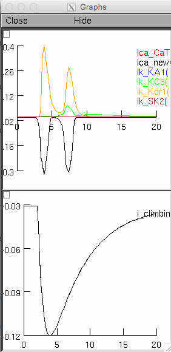
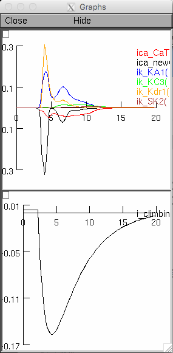
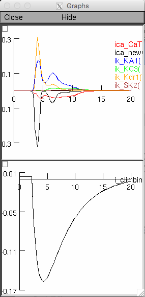

This is the readme for the model associated with the paper:
Ait Ouares K, Filipis L, Tzilivaki A, Poirazi P, Canepari M (2019) Two
distinct sets of Ca2+ and K+ channels are activated at different
membrane potentials by the climbing fibre synaptic potential in
Purkinje neuron dendrites. J Neurosci
This model was contributed by Luiza Filipis and reproduces Cell1 of
Figure 9 on paper. If you need more help than the below in running the model
please consult the web page: https://senselab.med.yale.edu/ModelDB/NEURON_DwnldGuide.cshtml
MSWIN
-----
Run mknrndll, cd to the expanded directory and click on the make
nrnmech.dll button. Under windows explorer double click on the
mosinitD.hoc, mosinitH.hoc or mosinitI.hoc file to see the result for the
Depolarised, Hyperpolarised or Intermediate state respectively.
LINUX/UNIX
----------
Run nrnivmodl in the expanded archive folder. Then type
nrngui mosinitD.hoc, mosinitH.hoc or mosinitI.hoc file to see the result for
the Depolarised, Hyperpolarised or Intermediate state respectively.
MAC OS X
--------
Drag and drop the expanded folder onto the mknrndll icon. Drag and
drop the mosinitD.hoc, mosinitH.hoc or mosinitI.hoc file onto the nrngui icon
to see the result for the Depolarised, Hyperpolarised or Intermediate state
respectively.
Depolarized:

Hyperpolarized:
 Intermediate:

Intermediate:
